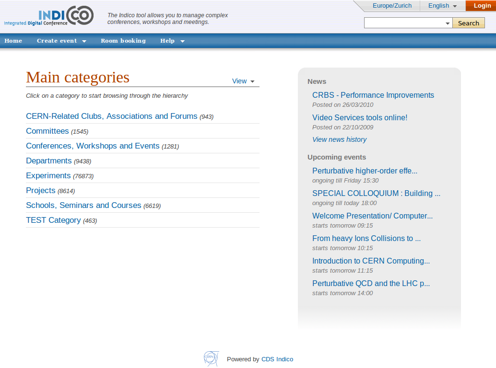
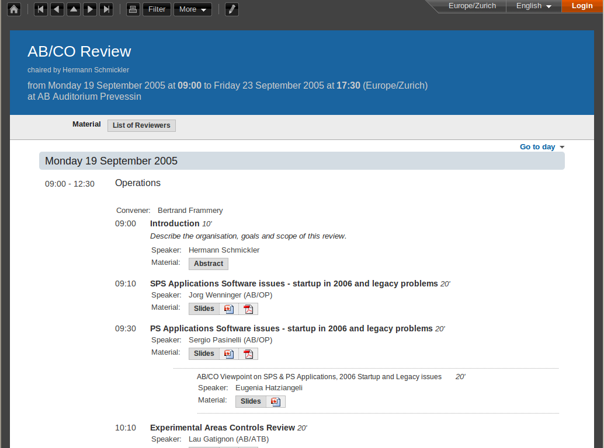
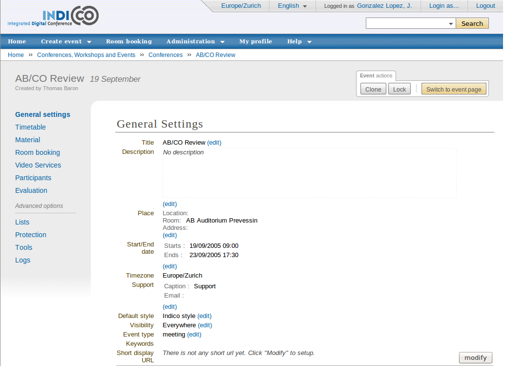
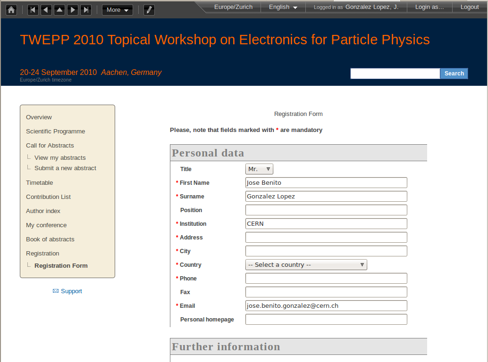

Features
 Multiple event support
{kind=link}
- Events organised in categories
- Category-driven navigation
- Time-driven navigation (calendar day/week/month overview)
 Flexible event representation
{kind=link}
- Allows different views of the same event
- Provides access to the timetable and various listings (participants, contributions...)
- Stores all kind of files including pictures, transparencies, minutes, videos, etc.
 Full management of conference cycle
{kind=link}
- Simple forms for creating events of various complexity
- Easy setup of access and modifications rights
- Call for abstracts, registration form, paper reviewing, track management, proceedings, listings...
- Easy creation of timetable and customization of the conference website
 End user interactions
{kind=link}
- Registration
- Abstract submission
- Paper submission
- Slide upload
{kind=link}
To find out more about Indico's features, please check the Documentation page or, install Indico or just give it a try here.
Last modified 5 years ago
Last modified on 07/07/10 09:37:01